내려간 잇몸,
다시 회복할 수 있을까요?
한번 내려간 잇몸은 다시 올라오지 않는다는 말에 걱정이 많으신가요?
내려앉은 잇몸을 본래의 위치로 되돌리기 위해서는 현재 상태에 대한 깊이 있는 진단과 치료 계획, 그리고 정교한 치료 과정이 필요합니다. 이 과정을 거치면 잇몸은 다시 회복될 수 있습니다.
WHY IT MATTERS
잇몸 재건이 필요한 이유
ONE PRINCIPLE
방법은 상황에 따라 달라도,
원칙은 하나입니다
잇몸이 내려간 부위와 잇몸의 두께, 주변 치아의 상태에 따라 수술 방법은 조금씩 다르게 계획합니다. 하지만 지향하는 원칙은 언제나 같습니다.
-
1
내려간 잇몸을 올려 덮습니다
내려간 잇몸을 본래의 높이로 끌어올려, 드러난 치아 뿌리를 다시 덮어 줍니다. 주변 잇몸을 옮겨 덮는 것만으로 충분한 경우도 있고, 잇몸이 얇거나 부족하면 입천장에서 얻은 잇몸 조직을 함께 이식하는 결합조직이식술을 병행합니다.
-
2
잇몸의 두께를 확보합니다
얇은 잇몸을 충분히 두껍게 만들어, 앞으로 다시 내려갈 가능성을 줄입니다.
CASES
치료 사례
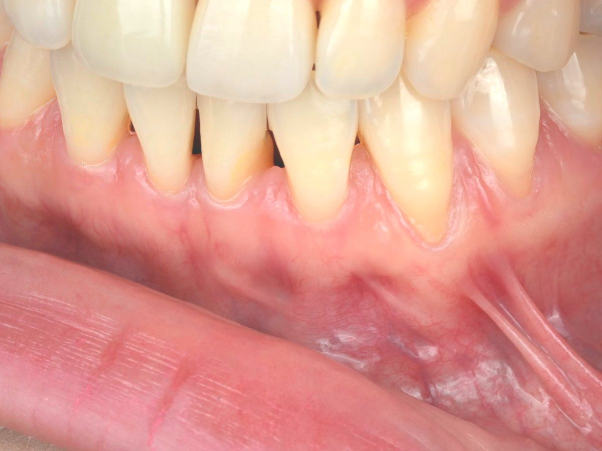
치료 전 · 2025.07.02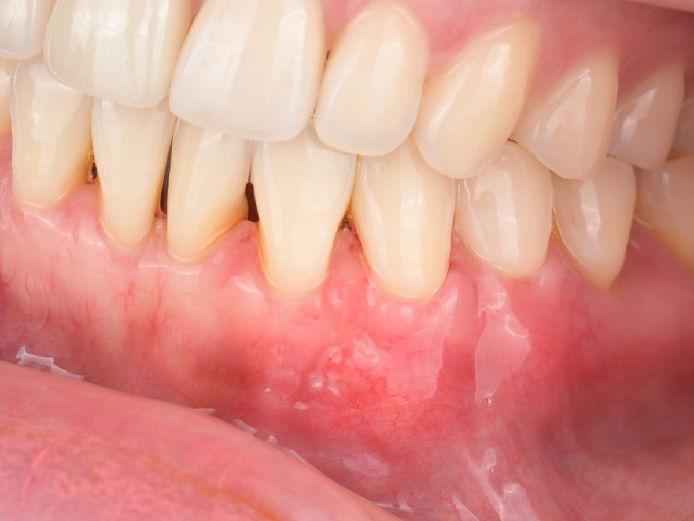
치료 후 · 2025.08.14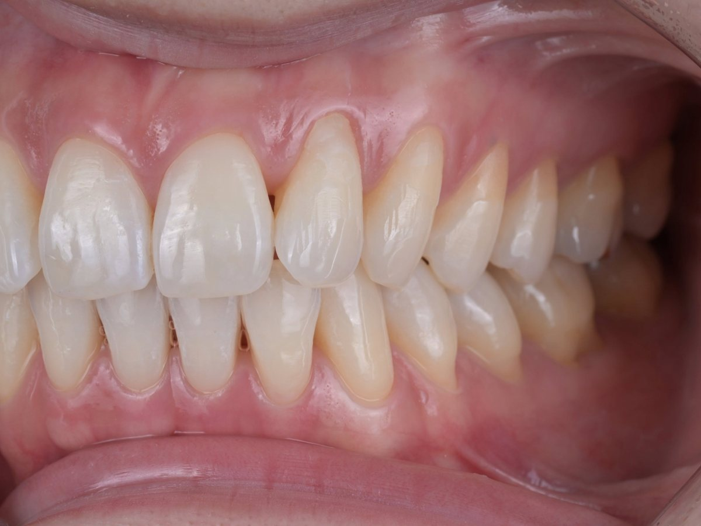
치료 전 · 2026.08.25시린 증상 때문에 드러난 뿌리 부분을 레진으로 덮어 둔 상태입니다.
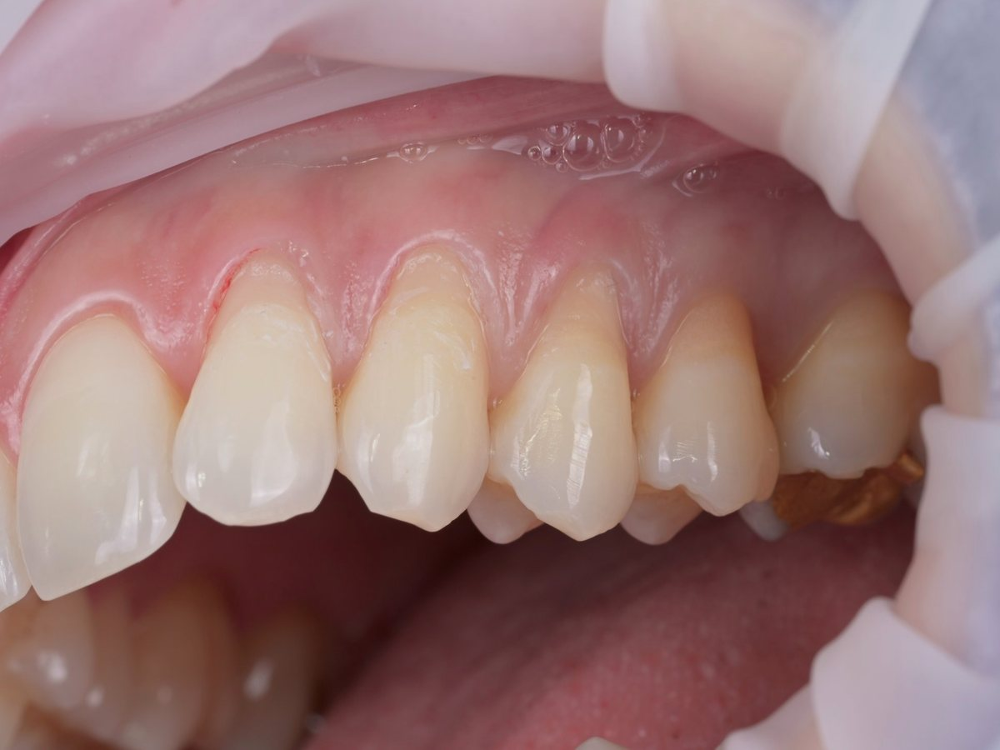
치료 중 · 2026.09.30레진을 모두 걷어 내자 실제로 잇몸이 내려간 범위가 드러납니다.
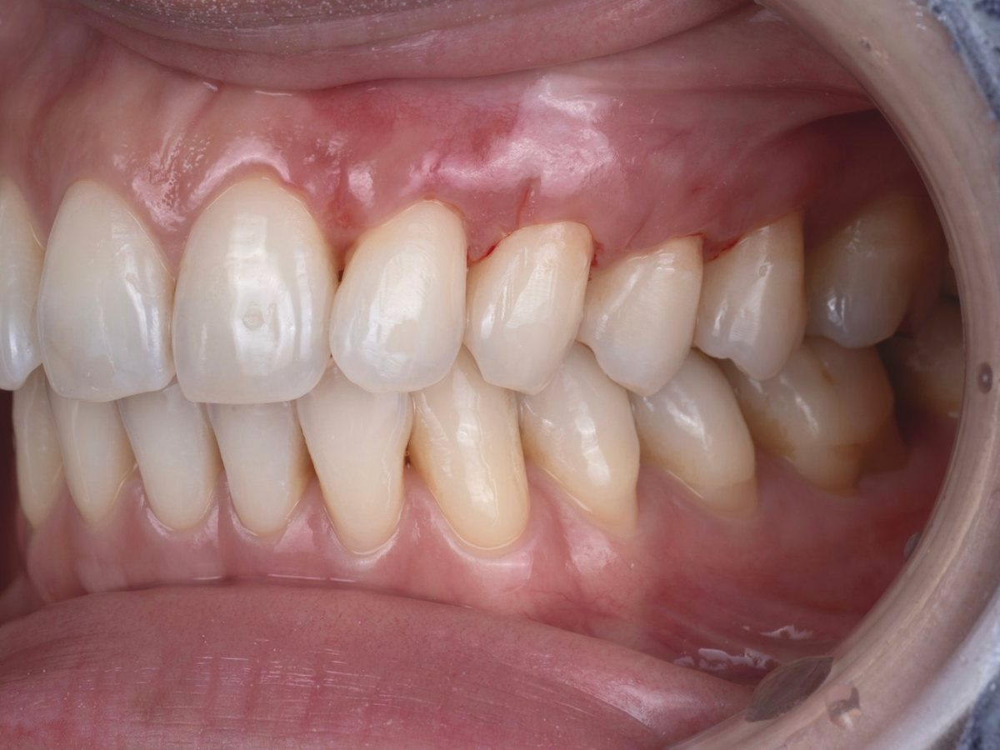
치료 후 · 2026.10.21결합조직이식을 이용한 치근피개술로 드러났던 뿌리를 잇몸으로 덮었습니다.
레진으로 덮어 두었던 잇몸 퇴축, 근본 원인부터 해결했습니다
드러난 뿌리를 레진으로 덮으면 당장의 시린 증상은 줄어듭니다. 하지만 잇몸이 부족한 원인은 그대로 남아, 치아는 여전히 길어 보이고 레진과 잇몸 경계는 관리하기 어려워집니다. 이 경우 레진을 모두 걷어 낸 뒤, 입천장에서 얻은 잇몸 결합조직을 내려간 잇몸 아래에 이식해 뿌리를 덮는 결합조직이식 치근피개술을 시행했습니다. 뿌리를 덮는 것과 동시에 잇몸의 두께도 확보할 수 있어, 시린 증상과 잇몸 퇴축을 함께 해결하는 근본적인 치료 방법입니다.
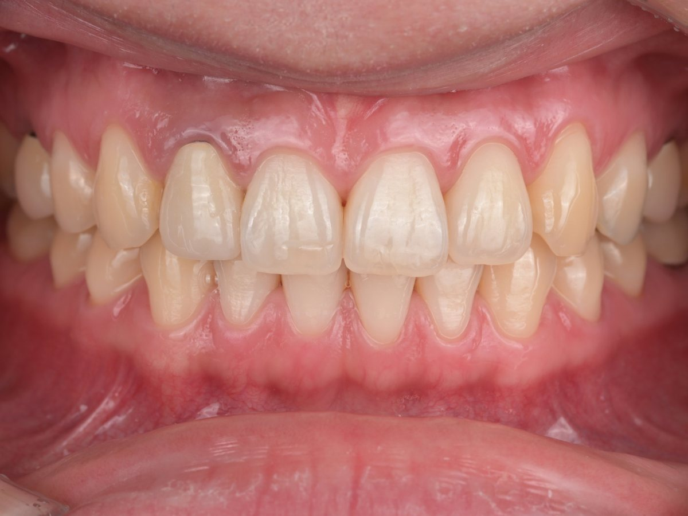
치료 전 · 2025.09.12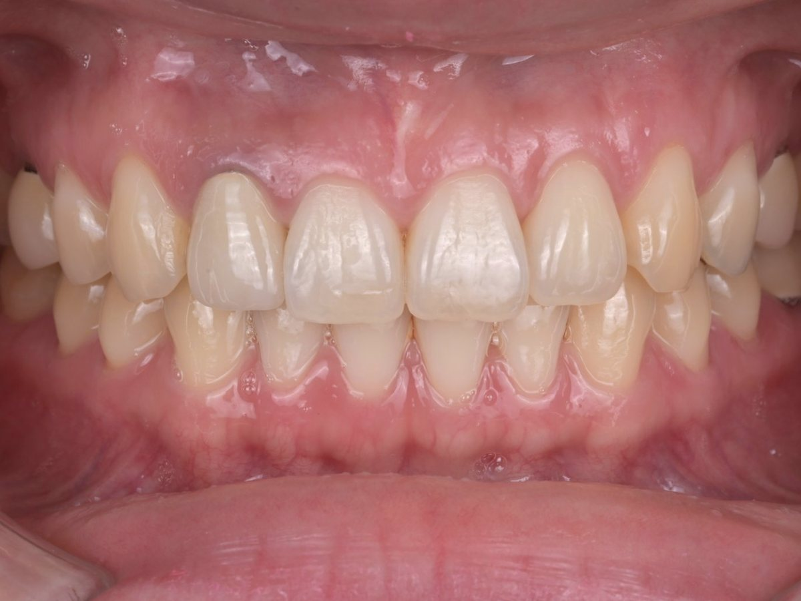
치료 후 · 2026.09.30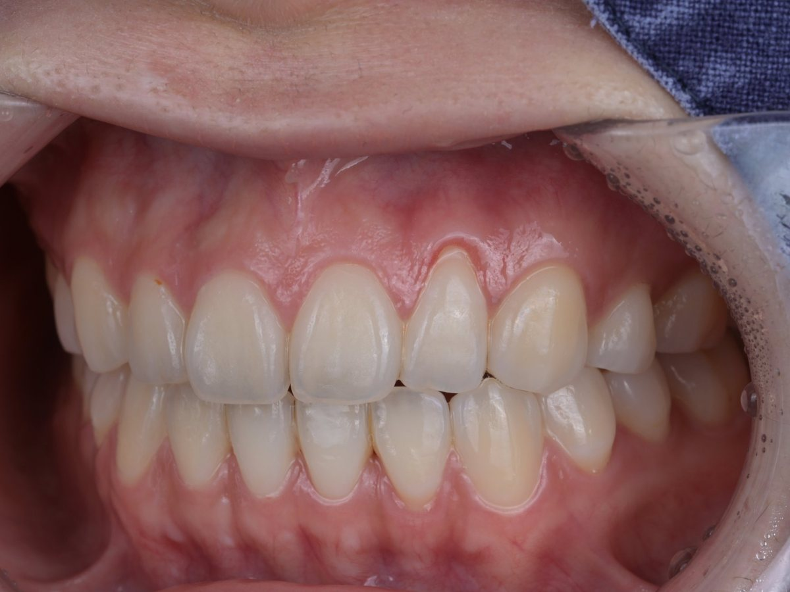
치료 전 · 2026.05.06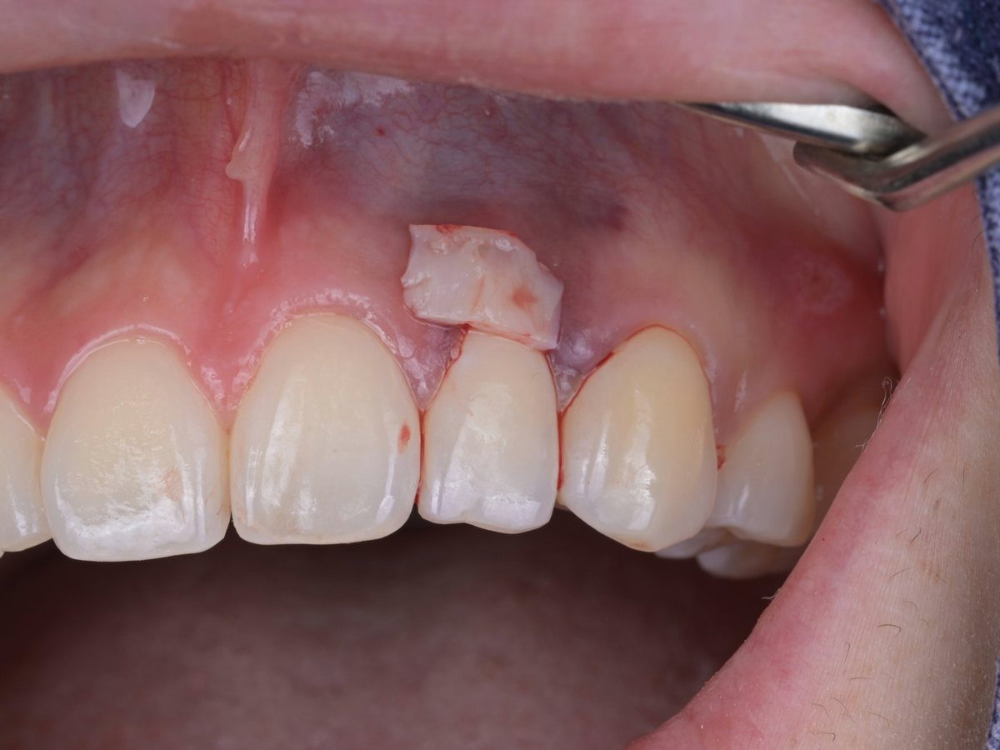
치료 중 · 2026.05.15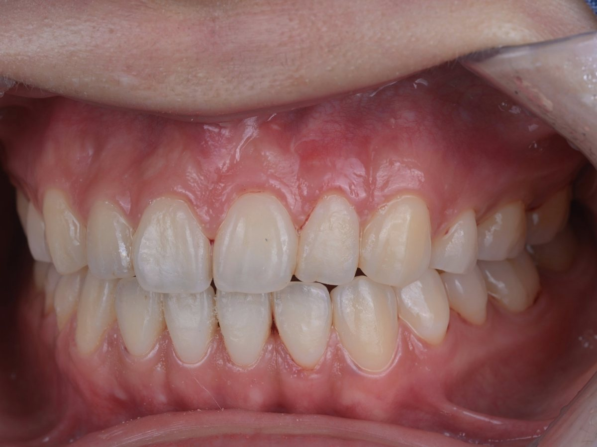
치료 후 · 2026.10.14환자분의 동의를 받아 게시한 사진입니다. 수술 후 일시적인 통증, 부기, 출혈이 있을 수 있으며 결과는 개인의 잇몸 상태에 따라 다를 수 있습니다.
BEYOND RESIN
드러난 뿌리를 레진으로만
덮으면 안 되나요?
레진으로 패인 곳을 메우면 당장의 시림은 줄 수 있습니다. 하지만 잇몸이 부족한 문제는 그대로 남고, 치아가 길어 보이며, 잇몸과 레진 경계에 치태가 쌓여 관리가 어려워집니다. 원인인 잇몸을 되살려야 근본적으로 해결됩니다.
01 · 진단
원인과 상태 확인
잇몸이 내려간 정도와 원인, 잇몸 두께, 치아 사이 뼈의 높이를 확인하고, 깨지거나 맞지 않는 예전 레진이 있으면 함께 정리합니다.
02 · 설계
목표 잇몸 라인 설계
잇몸이 어디까지 덮여야 하는지, 패인 치아 목은 어디까지 레진으로 되살릴지 경계를 먼저 정합니다.
03 · 재건
치아와 잇몸을 함께 회복
필요한 만큼 치아 형태를 수복하고, 그 위로 잇몸을 두껍게 덮어 자연스러운 라인을 만듭니다.
TIMING
발견했을 때가
치료하기 가장 좋은 때입니다
잇몸 퇴축은 저절로 되돌아오지 않고, 시간이 지나면서 조금씩 더 진행하는 경우가 많습니다. 잇몸이 더 내려가고 치아 사이 뼈까지 줄어들면 완전히 덮기가 점점 어려워집니다.
반대로 잇몸이 충분한 두께로 재건되면 앞으로 다시 내려갈 위험도 함께 줄어듭니다. 잇몸이 내려간 것을 발견했다면, 더 진행되기 전에 상태를 확인해 보시길 권합니다.
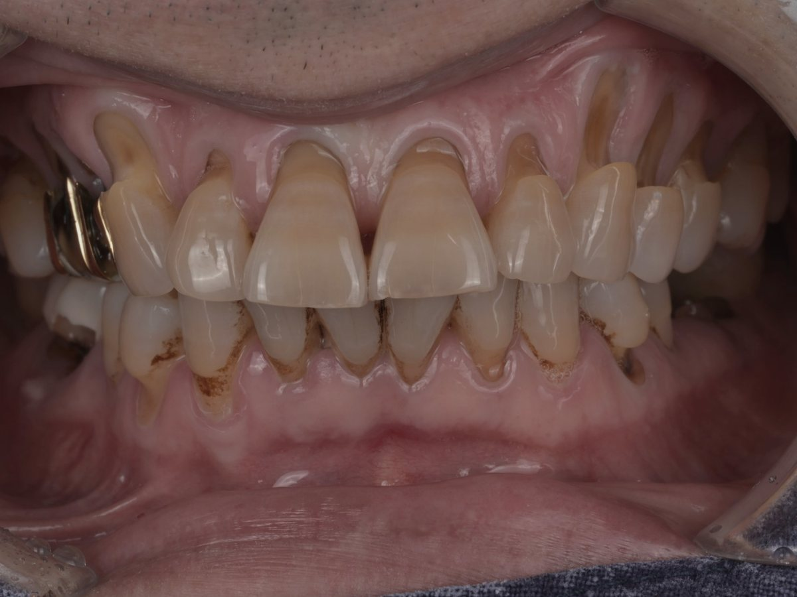
WITH PROSTHODONTICS
보철 전에 잇몸 라인부터
앞니 라미네이트나 크라운을 하기 전에 잇몸 높이가 고르지 않으면, 보철물이 아무리 정교해도 모양이 어색해집니다. 치과보철과 전문의가 최종 치아의 모습을 기준으로 잇몸 라인을 먼저 정리한 뒤 보철로 마무리합니다.
FAQ
자주 묻는 질문
언제 치료를 받는 것이 좋나요?
잇몸이 내려간 것을 알게 되었을 때 가능한 한 빨리 상태를 확인하는 것이 좋습니다. 퇴축이 진행되고 치아 사이 뼈까지 줄어들면 뿌리를 완전히 덮기가 점점 어려워집니다.
레진 치료로 대신할 수는 없나요?
레진은 패인 치아 목을 메워 시린 증상을 줄여 줄 수 있지만, 부족한 잇몸을 되살리지는 못합니다. 치아가 길어 보이는 문제와 관리의 어려움이 남기 때문에, 필요하면 레진과 잇몸 재건을 함께 계획합니다.
약이나 치약, 영양제로 잇몸이 다시 자라나요?
잇몸 염증을 줄이는 데 도움이 되는 제품은 있지만, 이미 내려간 잇몸을 다시 자라게 한다고 입증된 약이나 제품은 없습니다. 시중에 유통되는 관련 정보 중 일부는 과학적 근거가 부족한 과장된 내용일 수 있으므로 주의가 필요합니다. 이미 퇴축이 진행된 잇몸은 물리적인 연조직 재건 술식을 통해서만 회복할 수 있습니다.
수술이 많이 아프지 않나요?
미세 기구로 절개를 최소화하고 정교하게 봉합하기 때문에, 대부분 처방받은 진통제로 조절되는 정도이며 며칠 안에 일상생활로 돌아가십니다. 부기나 불편감의 정도는 수술 범위와 개인에 따라 다릅니다.
재건한 잇몸은 오래 유지되나요?
잇몸을 충분한 두께로 재건하고, 올바른 칫솔질과 정기 검진으로 관리하면 안정적으로 유지되는 경우가 많습니다. 너무 세게 닦는 습관이나 이갈이처럼 퇴축의 원인이 된 습관을 함께 바로잡는 것도 중요합니다.
GUMMY SMILE
웃을 때 잇몸이 많이 보인다면,
원인부터 정확히 구분합니다
웃을 때 잇몸이 많이 드러나거나 치아가 유난히 짧아 보이는 것을 거미스마일(Gummy smile)이라고 합니다. 겉모습은 비슷해도 원인은 사람마다 다르고, 원인에 따라 치료 방법도 완전히 달라집니다. 그래서 무엇보다 먼저 정확한 원인을 찾습니다.
잇몸이 치아를 덮고 있는 경우
치아가 다 자란 뒤에도 잇몸이 제자리로 올라가지 않아 치아의 일부를 덮고 있는 경우입니다. 치아가 짧고 네모나게 보입니다.
치아가 닳아 짧아진 경우
이갈이나 마모로 치아 끝이 닳으면서 치아가 짧아지고, 상대적으로 잇몸이 많이 보이게 됩니다.
입술이 많이 올라가는 경우
웃을 때 윗입술이 평균보다 많이 올라가 잇몸이 드러나는 경우입니다.
위턱뼈가 길게 자란 경우
위턱뼈가 아래로 길게 성장해, 입술이 편안히 있어도 잇몸이 많이 보이는 경우입니다.
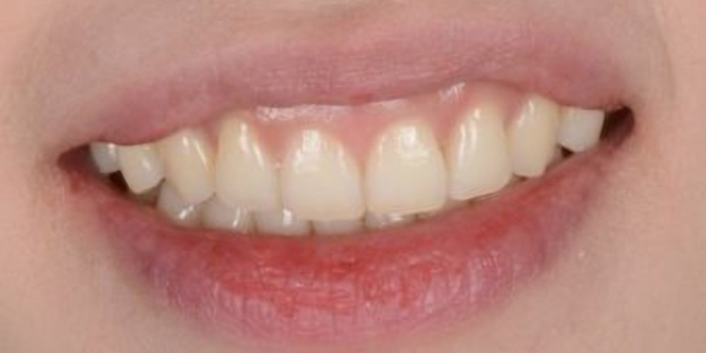
치료 전 · 2024.07.29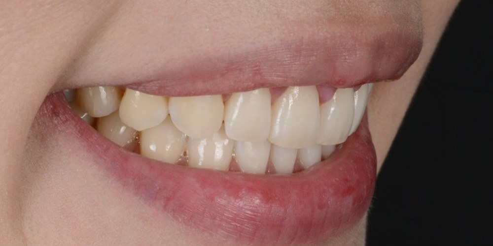
치료 후 · 2024.12.06잇몸과 치아가 원인이라면,
잇몸 라인을 다시 디자인합니다
잇몸이 치아를 덮고 있거나 치아가 짧아진 경우에는 치은성형술이나 치관연장술로 잇몸 라인을 다듬어 치아 본래의 길이를 드러냅니다. 필요하면 잇몸 아래 뼈의 높이도 함께 정리해, 잇몸이 다시 내려와 덮이지 않도록 합니다.
치과보철과 전문의가 웃는 얼굴과 입술 라인, 앞니의 길이와 비율을 함께 보고 목표 잇몸 라인을 정합니다. 치아가 닳은 경우에는 잇몸 라인을 정리한 뒤 라미네이트나 레진으로 치아 길이까지 되살립니다.
입술이나 턱뼈가 주된 원인이라면 잇몸 수술만으로는 한계가 있습니다. 이 경우 교정 치료나 다른 방법이 더 적합할 수 있어, 진단 결과를 솔직하게 설명드리고 함께 방법을 찾습니다.
한눈에 보기
- 어떤 치료인가요
- 내려간 잇몸이나 고르지 않은 잇몸 라인을 미세한 수술로 다시 만들어, 드러난 뿌리를 덮고 잇몸의 두께와 형태를 되살리는 치료
- 치료 종류
- 치근피개술(드러난 뿌리를 잇몸으로 덮는 수술), 치은성형술(잇몸 라인을 다듬는 시술), 거미스마일 개선
- 원칙
- 확대 시야에서 미세 기구로 절개를 최소화하고, 잇몸을 얇게 덮는 데 그치지 않고 충분한 두께로 재건해 다시 내려가지 않도록 합니다.
- 담당 의료진
- 배민수 원장 (치과보철과 전문의, 치의학박사)
잇몸이 너무 내려갔거나 너무 많이 보여서
고민이시라면, 내원하셔서 상담받아 보세요.
위드치과보철과는 예약제로 운영됩니다.